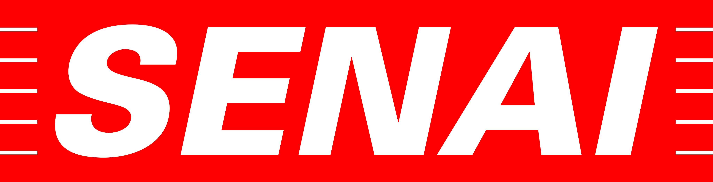
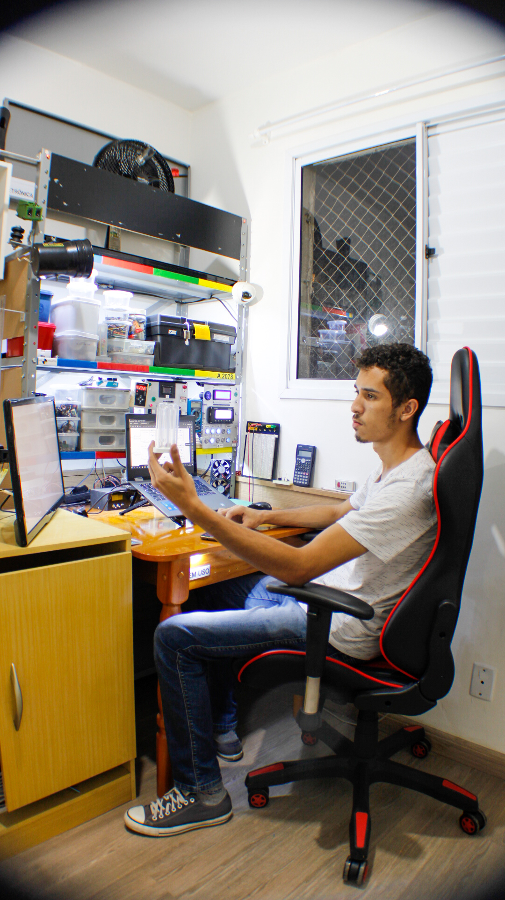
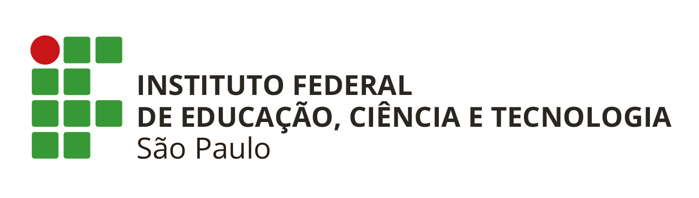
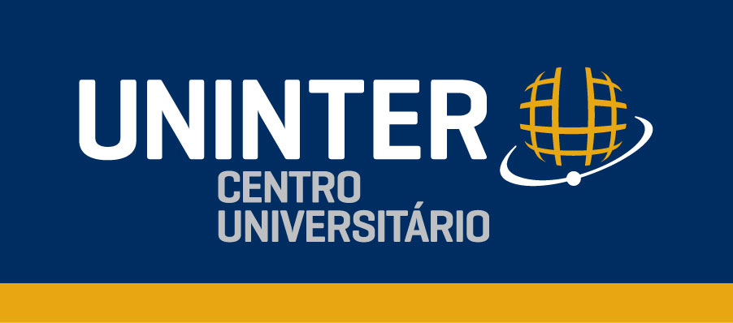
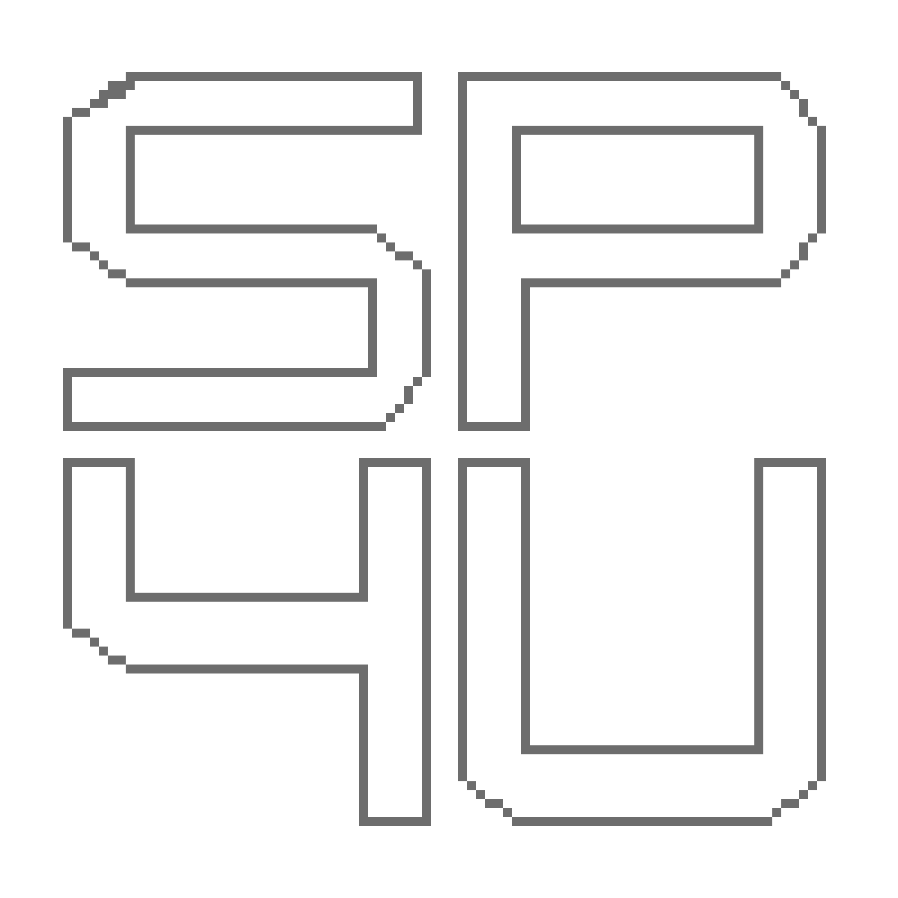
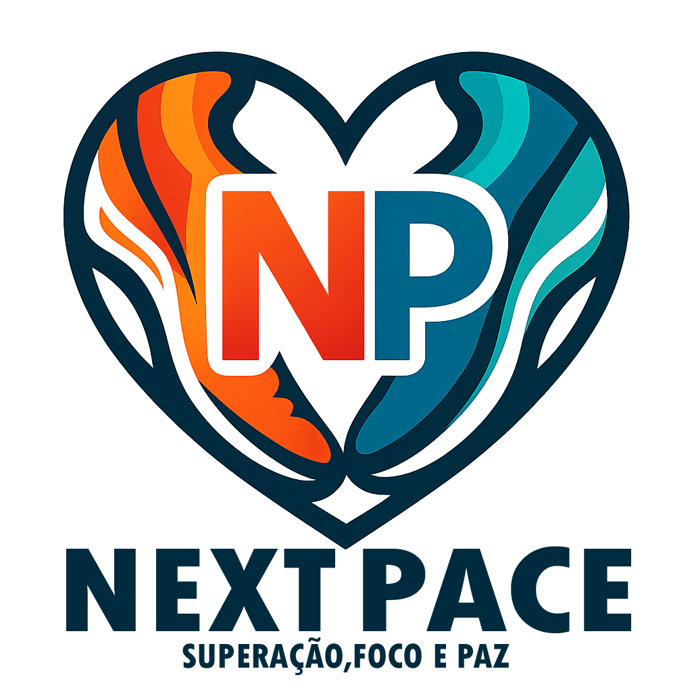

Eletricista de Manutenção
Escola SENAI “Roberto Simonsen”
TECNOLOGIA · DADOS · MOBILIDADE
Sou Rafael Barbosa. Uno minha experiência no transporte urbano à curiosidade por tecnologia e dados para criar soluções digitais úteis.
01 / QUEM SOU

A tecnologia fica mais interessante quando ajuda a entender o mundo real.
Trabalho como metroviário e tenho um interesse especial por dados públicos e mobilidade urbana. Estou explorando programação como uma extensão desse olhar técnico, transformando perguntas do cotidiano em projetos digitais.
Fora das telas, gosto de praticar esportes e fotografar cenas do dia a dia.
02 / TRAJETÓRIA

Escola SENAI “Roberto Simonsen”

Instituto Federal de São Paulo · IFSP

Centro Universitário Internacional · UNINTER
03 / SELEÇÃO DE PROJETOS
Projetos que conectam tecnologia, informação e problemas do dia a dia.

DADOS ABERTOS / SP01Dados abertos sobre o transporte metroviário, metropolitano e metrorrodoviário do estado de São Paulo.
Dashboard para acompanhar investimentos, indicadores e desempenho da carteira em um só lugar.

ESPORTES / COMUNIDADE03Uma ideia em construção para encontrar eventos de corrida, ciclismo e outras modalidades.
Versão Android do SP4U, levando o projeto de mobilidade urbana para dispositivos móveis.
04 / PRÓXIMO PASSO
Estou aberto a conversas sobre tecnologia, dados e mobilidade.